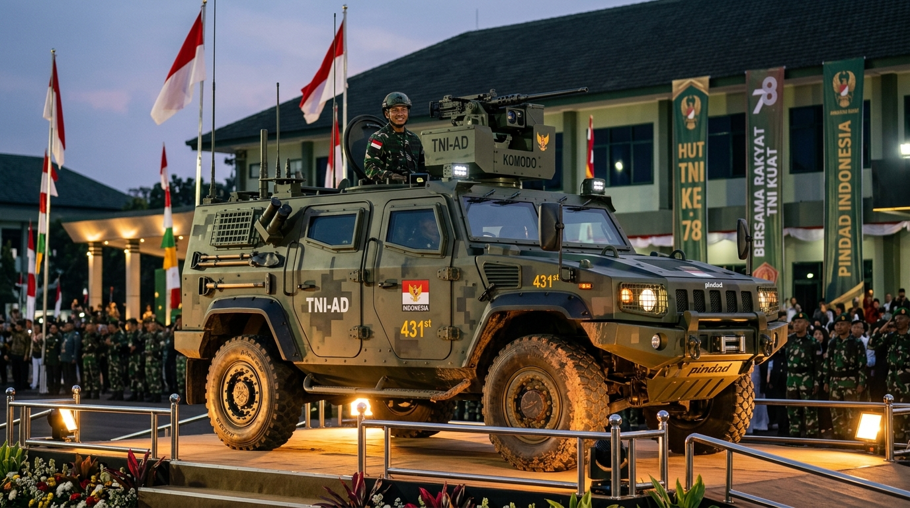
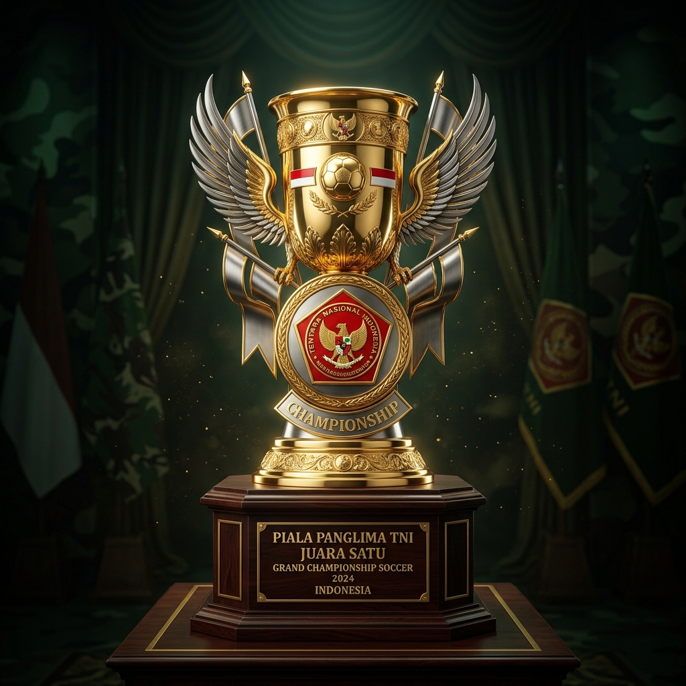

[ COORD: 06°10'31"S 106°49'37"E ]
[ STATUS: OPERASIONAL JUARA ]
[ QUOTA RATIO: 40% YOUNG / 60% SENIOR ]
Dua simbol supremasi taktis tertinggi menanti Kodam terbaik yang mampu memimpin klasemen pertandingan.

Kendaraan taktis modern pelindung baja ringan dengan spesifikasi khusus, bertenaga tinggi, dan bersistem penggerak 4x4. Dirancang khusus untuk efisiensi mobilitas taktis prajurit di berbagai medan ekstrim.

Trophy bergengsi berlapis logam mulia dengan ukiran lambang Kartika Eka Paksi. Lambang kejayaan sepak bola fisik dan disiplin taktik terbaik di jajaran Tentara Nasional Indonesia.
Guna memelihara kesinambungan fisik dan regenerasi taktis, turnamen menerapkan rasio wajib usia pemain.
Setiap tim Kodam mendaftarkan 11 pemain utama + 9 cadangan (Total 20 pemain) dengan rasio wajib:
Seluruh roster wajib merupakan personel militer aktif dari jajaran Kodam bersangkutan, dibuktikan dengan Kartu Tanda Anggota (KTA) TNI sah.
Dari total 20 pemain yang terdaftar dalam kontingen, kuota usia harus tepat: 8 pemain berusia di bawah 30 tahun dan 12 pemain berusia 30 tahun ke atas.
Pemain wajib melampirkan hasil evaluasi kesehatan fisik dan tes jantung/kardio dari rumah sakit Kesdam masing-masing kontingen.
Alur taktis pertempuran sepak bola dari seleksi awal hingga angkat piala di Lapangan Utama Mabesad.
Pendaftaran tim secara daring & fisik. Penyerahan daftar susunan pemain (DSP), KTA, riwayat kesehatan, dan verifikasi rasio usia pemain (40:60) oleh Panitia Mabesad.
Pembagian grup Kodam, pembacaan regulasi detail pertandingan, serta undian jadwal kick-off. Dipimpin oleh Panitia Pusat Persatuan Sepak Bola Angkatan Darat (PSAD).
Babak penyisihan grup yang membagi kontingen ke dalam 4 grup (A, B, C, D). Pertandingan memperebutkan tiket perempat final dengan sistem setengah kompetisi.
Babak perempat final dan semifinal yang panas. Bertepatan dengan semarak HUT RI ke-82, pertandingan diselenggarakan dengan sistem gugur langsung di Lapangan Mabesad.
Pertempuran puncak grand final memperebutkan gelar Juara Pertama, penyerahan Piala Bergilir KASAD, serta kunci simbolis 1 Unit Mobil Taktis oleh Bapak KASAD langsung.
Lapangan sepak bola berstandar internasional yang berada tepat di jantung Markas Besar TNI Angkatan Darat (Mabesad), Jakarta. Menawarkan atmosfer kompetisi yang disiplin, aman, dan sangat prestisius.
Jl. Veteran No. 5, Gambir, Jakarta Pusat, DKI Jakarta (Kompleks Mabesad)
Daftarkan tim Kodam Anda dan uji apakah roster pemain memenuhi kriteria ketat rasio usia (40% Muda dan 60% Senior).